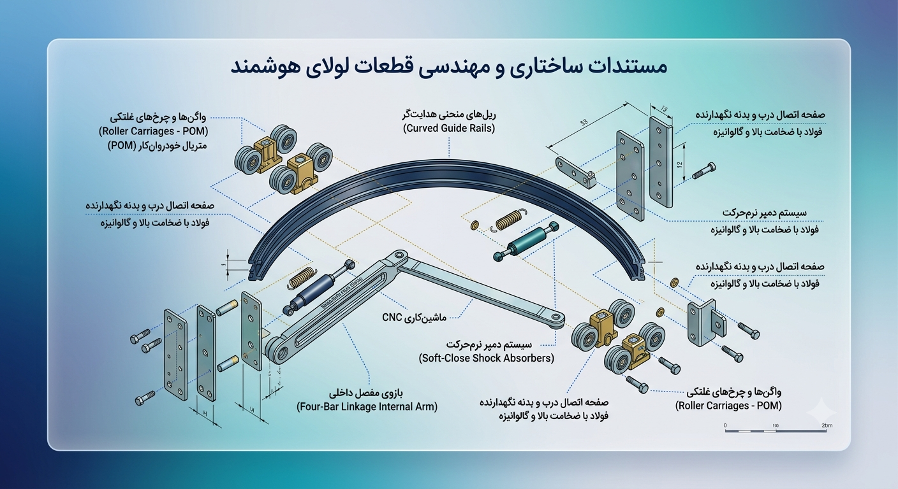

مستندات اطلاعات فنی و اجزای مکانیکی

۱. مشخصات فنی دقیق و متریال اجزا
مستندات ساختاری و مهندسی قطعات لولای هوشمند:
مکانیزم لولای هوشمند همزمان (Bus-Door / Pocket Door) از یک ساختار چندپارچه مکانیکی تشکیل شده است. اجزای اصلی این مکانیزم و مشخصات متریال آنها به شرح زیر تبیین میگردد:
- ریلهای منحنی هدایتگر (Curved Guide Rails): این ریلها وظیفه تعیین مسیر دقیق حرکت ترکیبی (انتقالی-دورانی) درب را بر عهده دارند. به منظور تحمل نیروهای دینامیکی حاصل از شتاب اولیه حرکت و جلوگیری از دفرمه شدن در طول زمان، این قطعه از جنس آلومینیوم آنودایز شده (گرید صنعتی) یا فولاد ضدزنگ (Stainless Steel 304) با پوشش سختکاریشده در نظر گرفته شده است.
- واگنها و چرخهای غلتکی (Roller Carriages): برای تضمین حرکت روان و بیصدا در داخل ریلها، غلتکهای این بخش از نوعی پلیمر ساخته شدهاند که ویژگی منحصربهفرد این پلیمر، خاصیت خودروانکاری (Self-Lubricating)، مقاومت بسیار بالا در برابر سایش و ضریب اصطکاک ناچیز است که نیاز به روغنکاری دورهای را کاملاً حذف میکند.
- بازوی مفصل داخلی و مکانیسم چهارمیلهای (Four-Bar Linkage Internal Arm): بازوی اصلی که انتقالدهنده گشتاور و کنترلکننده زاویه چرخش درب است، به روش ماشینکاری CNC از جنس فولاد ساختمانی با استحکام بالا تولید میشود تا در برابر ممانهای خمشی ناشی از وزن دربهای سنگین، کمترین میزان انحراف را داشته باشد.
- صفحه اتصال درب و بدنه نگهدارنده: این قطعات واسط که لولا را به بدنه جانبی کابینت و جداره داخلی درب متصل میکنند، از ورقهای فولادی پرسشده با ضخامت بالا به همراه پوشش گالوانیزه جهت پیشگیری از خوردگی و زنگزدگی در محیطهای مرطوب (مانند آشپزخانه) طراحی شدهاند.
- سیستم دمپر نرمحرکت (Soft-Close Shock Absorbers): در انتهای کورس حرکت خطی و چرخشی، یک جفت دمپر هیدرولیکی مینیاتوری تعبیه شده است تا انرژی جنبشی درب را در چند سانتیمتر پایانی مستهلک کرده و از برخورد ناگهانی و ایجاد صدا جلوگیری کند.
۲. مزایای محصول و حل چالشهای مکانیزمهای موجود
تحلیل مزایای در مقایسه با راهکارهای موجود:
در طراحیهای مدرن و فضاهای مینیاتوری، لولاهای سنتی و حتی مکانیزمهای پیشرفته بینالمللی با چالشهای ساختاری مواجه هستند که لولای هوشمند همزمان موفق به رفع تقریبی آنها شده است:
- حذف شعاع حرکتی بازشو (Clearance Space): لولاهای متداول ۹۰ و ۱۸۰ درجه بازار، نیازمند فضای مانور وسیعی در جلوی کابینت هستند که حرکت را در راهروهای تنگ یا آشپزخانههای کوچک مختل میکند. مکانیزم پیشرفته ما با ترکیب همزمان حرکت خطی و دورانی، درب را به داخل حجم مردهی خود کابینت هدایت میکند و شعاع مزاحم را به حداقل میرساند.
- رفع محدودیت حرکت عمودی (مقایسه با سیستمهای جک بالابر): جکهای پیشرفته حرکت درب را به سمت بالا هدایت میکنند. این سیستمها اولاً چالش بازشوی محور عمودی را حل نمیکنند و ثانیاً برای کابینتهای نزدیک به سقف یا افرادی با قد کوتاهتر، محدودیت دسترسی شدید ایجاد میکنند. لولای طراحیشده توسط تیم ما، با حرکت در محور افقی و پنهانسازی درب در کنارهها، دسترسی ۱۰۰ درصدی به داخل کابینت را بدون محدودیت ارتفاع فراهم میسازد.
- بهینهسازی توزیع جرم و طول عمر مکانیکی: استفاده هوشمندانه از ترکیب پلیمرهای سبک و آلومینیوم آنودایز شده در بخشهای متحرک، گشتاور وارده بر اتصالات دیواره کابینت را به شدت کاهش داده و بر خلاف لولاهای سنگین تمامفولادی، مانع از افتادگی یا دفرمه شدن درب در درازمدت میشود.
۳. نحوه دسترسی و تهیه محصول
صلاحیت تجاری و فرآیند سفارشدهی:
پروژه طراحی و توسعه لولای هوشمند همزمان در حال حاضر در فاز ارزیابی نمونه اولیه (MVP) و بومیسازی صنعتی در دانشکده مهندسی مکانیک دانشگاه تهران قرار دارد. صنایع کابینتسازی و سرمایهگذاران محترم جهت کسب اطلاعات فنی بیشتر, دریافت نقشههای سهبعدی متناسب با ابعاد سفارشی، یا هماهنگی برای تولید انبوه میتوانند مستقیماً با مدیریت محصول تماس حاصل فرمایند.
جهت برقراری ارتباط و ثبت سفارش، به بخش اطلاعات تماس بهرام جدید بنیاد (Product Manager) در صفحه اصلی مراجعه فرمایید یا از طریق دکمه زیر به صورت مستقیم به کارت ویزیت ایشان منتقل شوید:
ارتباط با مدیریت محصول (بهرام جدید بنیاد)